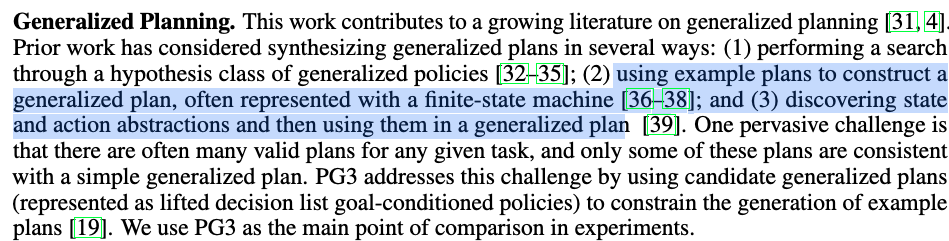
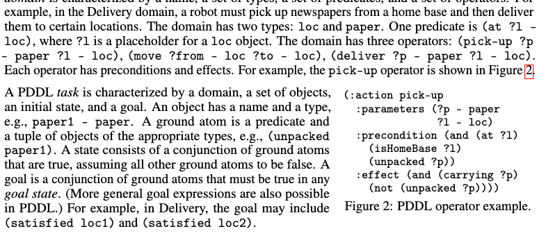
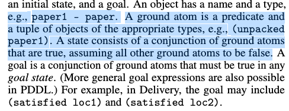
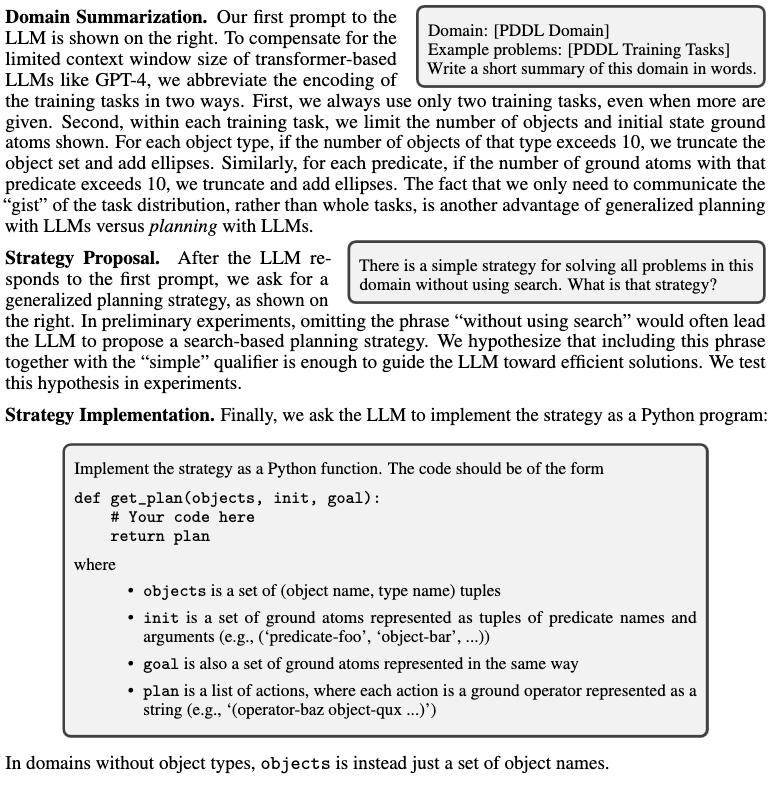
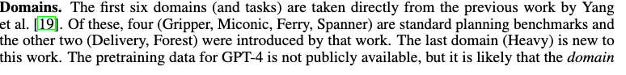
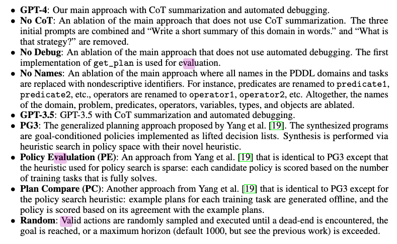
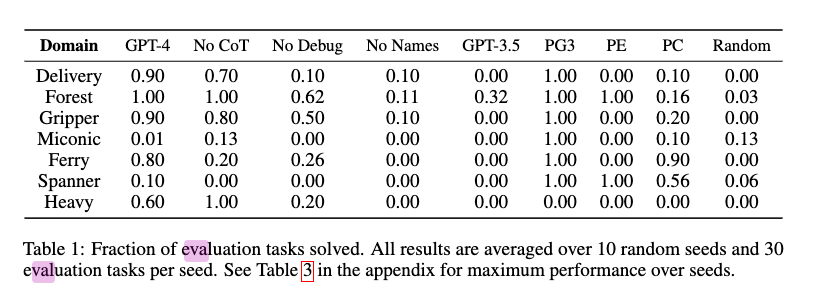
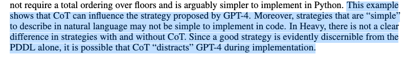

[TOC]
- Title: Generalised Planning in Pddl Domains With Pretrained Large Language Models
- Author: Tom Silver et. al.
- Publish Year: 18 May 2023
- Review Date: Tue, May 23, 2023
- url: https://arxiv.org/pdf/2305.11014.pdf
Summary of paper
Motivation
- in particular, we consider PDDL domains and use GPT-4 to synthesize Python programs,
- we also consider Chain of Thought (CoT) summarisation, where the LLM is prompted to summarize the domain and propose a strategy in words before synthesizing the program
- we consider automated debugging, where the program is validated with respect to the training tasks, and in case of errors, the LLM is re-prompted with four types of feedback.
Contribution
- we find that GPT4 is a surprisingly powerful generalised planner.
- we also conclude that automated debugging is very important, that CoT summarisation has non-uniform impact, that GPT4 is far superior to GPT3.5, and that just two training tasks are often sufficient for strong generalisation.
Some key terms
the problem
- It remains challenging to efficiently synthesize programs from few training tasks that generalise to a wide variety of held-out tasks.
process
- we prompt GPT-4 to write a natural language summary of the PDDL domain
- We then ask it to describe a solution strategy before finally implementing the strategy in Python
- We automatically provide feedback to GPT-4 in the case where it fails to solve training tasks
definition of generalised planning

background on PDDL
- A PDDL domain is characterized by a name, a set of types, a set of predicates and a set of operators.

- PDDL problem is characterised by a domain, a set of objects an initial state and a goal.

The objective of the work
- at evaluation time, a set of held-out evaluation tasks – typically involving many more objects – are used to measure performance. The objective is to use the training tasks to synthesise a program that will produce valid plans for all the evaluation tasks.
prompting method
- we hypothesized that decomposing generalised planning into three stages – domain summarisation, strategy proposal and strategy implementation – would improve performance

Experiments and results
- Can GPT-4 be used for generalised (PDDL) planning?
- Are the synthesized programs efficient?
- Does CoT summarization help?
- Does automated debugging help?
- To what extent does GPT-4 rely on names in the PDDL
- How does GPT-4 compare to GPT3.5
- Do each of the four error types help? (Python exception, Timeout, Plan Syntax, Plan Semantics)
experiment environment

Ablation


Potential future work
Strange thing about the paper
- I am a bit confused as the paper is asking the LLM to synthesise python program to generate a plan rather than asking a PDDL planner to generate a plan.
- Isn’t it true that a PDDL planner can directly generate a valid plan based on the PDDL domain and problem files. Why do we need a LLM to synthesise a python program to generate plan?
- Does it means that it still requires the LLM model to perform functional reasoning ability?
limitation and direction of future work
- the author did not know why CoT hamper the plan generation

- A major limitation of this work and previous work on generalized planning is that it is easy enough to hand-design generalized plans for all of the domains considered.
- In some cases, it may be considerably easier to specify PDDL domain and problem descriptions than it is to directly specify a generalized plan.